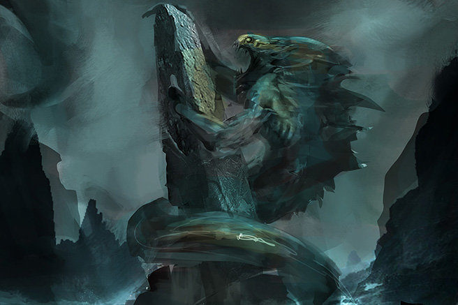
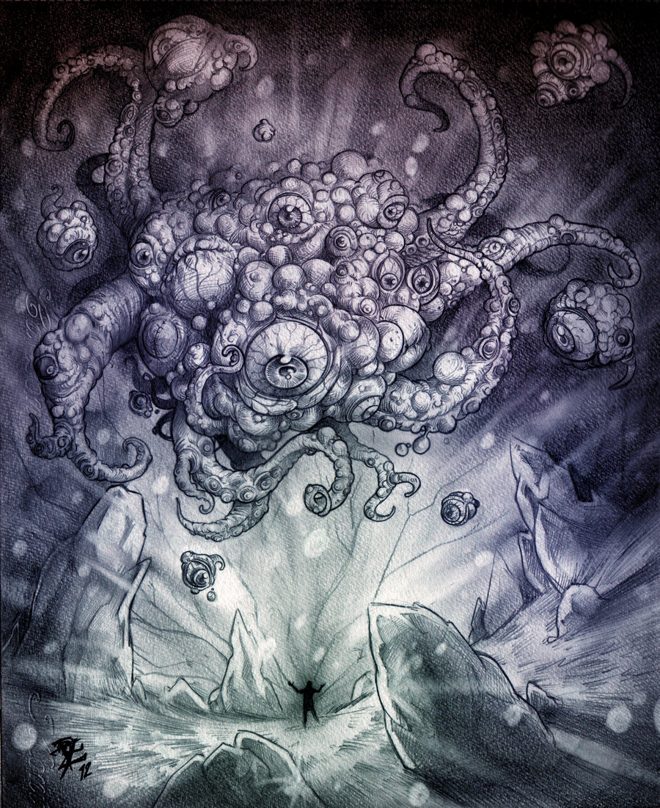

necronomicon
"That is not dead which can eternal lie,
And with strange aeons even death may die."
przedwieczni:
Cthulhu
Dagon
Yog-Sothoth
Cthulhu
"Ph'nglui mglw'nafh Cthulhu R'lyeh wgah,nagl fhtagn."
"W swym domu R'lyeh, martwy Cthulhu czeka śniąc."
 Cthulhu jest Wielkim Przedwiecznym posiadającym niezbadaną moc. Obecnie spoczywa na dnie Payfiku
w zatopionym mieście R'lyeh. Śpi snem głębokim jak śmierć dla nas ludzi. Czeka na odpowiedni moment
by znów powstać. U zarania dziejów jego obecność była wiodąca w kontaktach z naszym światem.
Cthulhu jest Wielkim Przedwiecznym posiadającym niezbadaną moc. Obecnie spoczywa na dnie Payfiku
w zatopionym mieście R'lyeh. Śpi snem głębokim jak śmierć dla nas ludzi. Czeka na odpowiedni moment
by znów powstać. U zarania dziejów jego obecność była wiodąca w kontaktach z naszym światem.
"They were not composed altogether of flesh and blood. They had shape [...]
but that shape was not made of matter. When the stars were right,
They could plunge from world to world through the sky; but when the stars were wrong,
They could not live. But although They no longer lived, They would never really die.
They all lay in stone houses in Their great city of R'lyeh, preserved by the
spells of mighty Cthulhu for a glorious resurrection when the stars and
the earth might once more be ready for Them.„
Dagon

Dagon jest bóstwem przewodzącym wszystkim Pochodzącym z Głębin,
amfibicznej, humanoidalnej rasie zamieszkującej Ziemskie oceany.
Poraz pierwszy pojawił się w krótkiej noweli Lovecrafta pod tytułem "Dagon",
od tej pory jest często wymieniany w mitach.
Znany jest również jako Ojciec Dagon, jest on Wielkim Przedwiecznym oraz małżonkiem Matki Hydry.
Dagon jest wielbiny przez Ezoteryczny Zakon Dagona, tajemny kult z siedzibą w Innsmouth.
Yog-Sothoth

"Yog-Sothoth knows the gate.
Yog-Sothoth is the gate.
Yog-Sothoth is the key and guardian of the gate.
Past, present, future, all are one in Yog-Sothoth.
He knows where the Old Ones broke through of old, and where They shall break through again.
He knows where They have trod earth's fields, and where They still tread them,
and why no one can behold Them as They tread."
Yog-Sothoth jest bytem kosmicznym oraz Zewnętrznym Bogiem.
Narodzony z Bezimiennej Mgły, jest on protoplastą Cthulhu,
Hastura Niewypowiedzianego oraz przodkiem Voormi'ego.
Jest również ojcem Wilbura Whateley'a.